Portafolio
- Dirección creativa
- Producción audiovisual
- Fotografía
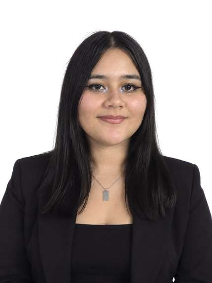
KarenCárdenas
Soy tecnóloga en Modelado y Animación Gráfica y en Procesos Publicitarios, con interés en la dirección y la producción audiovisual. Me enfoco en desarrollar ideas desde su concepto inicial hasta su realización, integrando narrativa, fotografía y lenguaje visual para construir propuestas con identidad propia. Me interesa explorar nuevas formas de contar historias y convertir conceptos en piezas audiovisuales que comuniquen con intención.
Proyectos
Filminuto psicológico
La última mirada
Sinopsis
En medio de un bosque al atardecer, Sebastián despierta desorientado, perturbado por un inquietante tic-tac y una voz que repite una misma pregunta: «¿Dónde estás?». Mientras busca desesperadamente su origen, se encuentra con un espejo que parece esconder algo más que su propio reflejo. Lo que comienza como un encuentro desconcertante se transforma en una experiencia cada vez más aterradora, donde las voces se multiplican, el sonido del tiempo se vuelve insoportable y su propia mirada comienza a perder sentido.
Atrapado entre el miedo y la desesperación, Sebastián intenta escapar de aquello que lo persigue, hasta enfrentarse a una imagen de sí mismo que ya no reconoce. En un último encuentro con el espejo, deberá confrontar el vacío que se oculta detrás de sus ojos, mientras las voces resuenan por última vez.
La última mirada es un filminuto psicológico que explora el miedo, la identidad y la pérdida de conexión con uno mismo, invitando al espectador a cuestionarse qué sucede cuando dejamos de reconocernos en nuestra propia mirada.
Preproducción
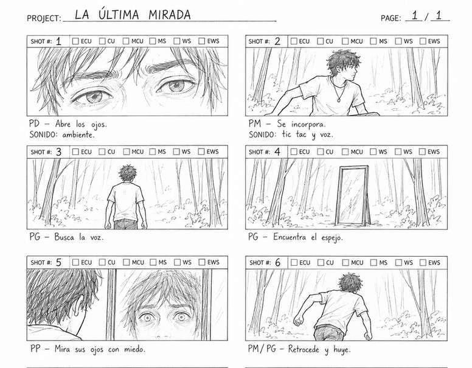
- PDAbre los ojos.Sonido: Ambiente.
- PMSe incorpora.Sonido: Tic tac y voz.
- PGBusca la voz.
- PGEncuentra el espejo.
- PPMira sus ojos con miedo.
- PM / PGRetrocede y huye.
Moodboard
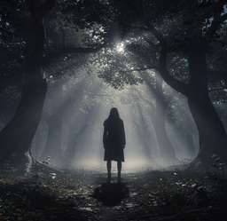
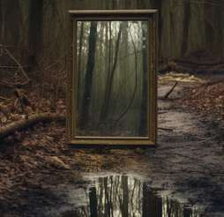
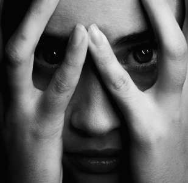
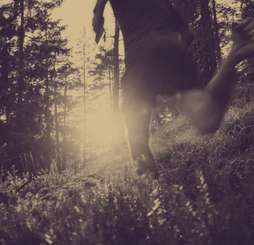
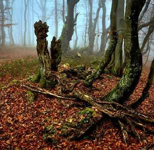
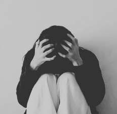
Making off
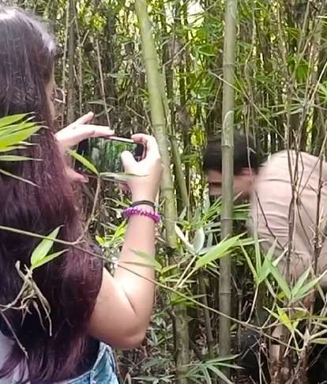

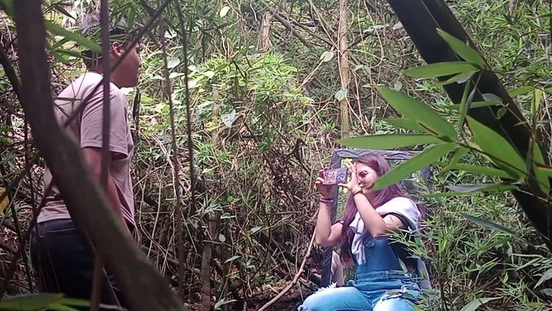
Fotogramas
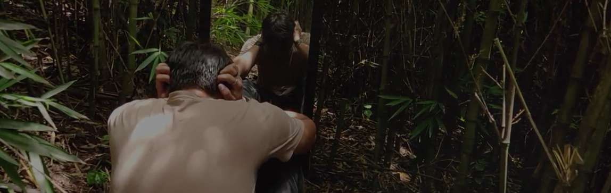
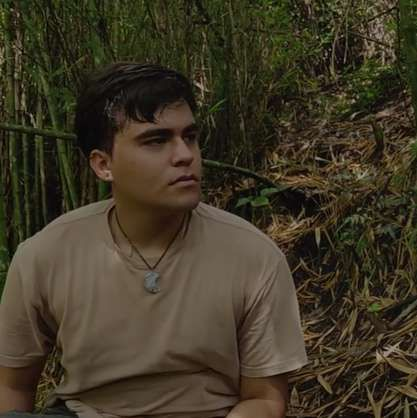
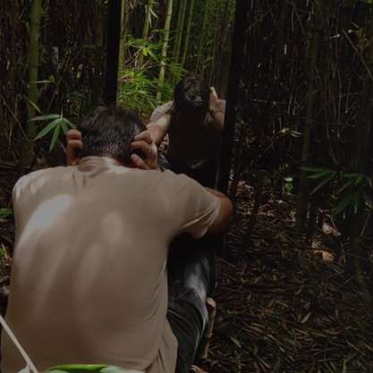
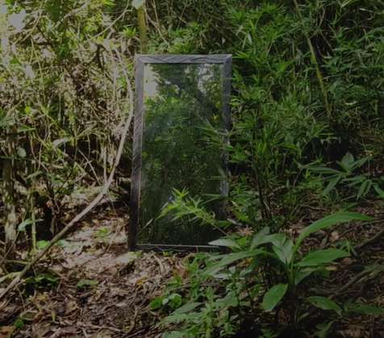
Equipo de producción
- Dirección y producción audiovisual
- Karen Fernanda Cárdenas Hernández
- Guion
- Michelle Nichole Palacio Hernández
- Actor
- Sebastian Restrepo Gil
Documental
De la mula al Willys
Sinopsis
Desde los nueve años, Pablo Emilio Teleche ha recorrido un camino marcado por el esfuerzo, la independencia y el amor profundo por los animales que acompañaron su vida. Criado entre bestias de carga y bajo las enseñanzas de su padre, encontró en las mulas mucho más que un oficio: una pasión que lo llevó a recorrer haciendas y distintas ciudades de Colombia, enfrentarse a las dificultades y construir su propio destino.
En este documental, Don Panlito, a través de sus recuerdos y experiencias, nos acerca a la memoria campesina, a los misterios de las montañas y a la riqueza de un mundo que muchas veces pasa inadvertido. Una historia sobre la evolución de las tradiciones, la capacidad de adaptación y el vínculo entre el ser humano, los animales y la tierra que habita.
Preproducción
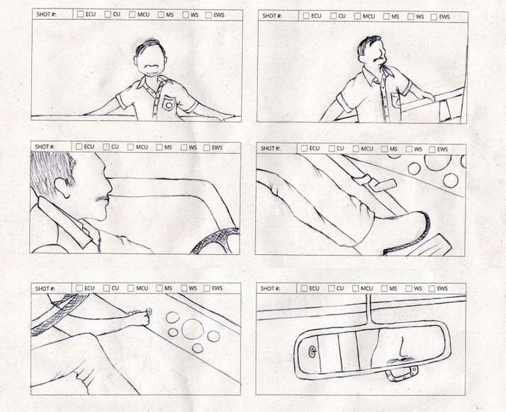
Moodboard
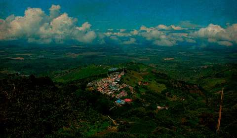
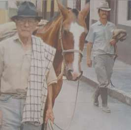
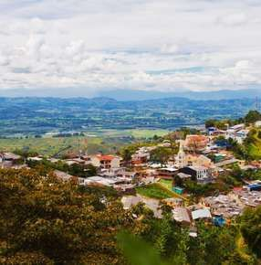
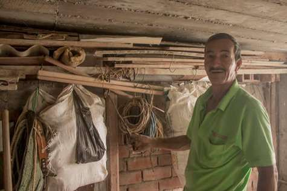
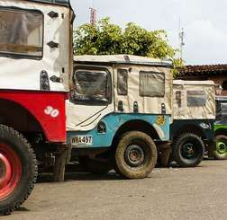
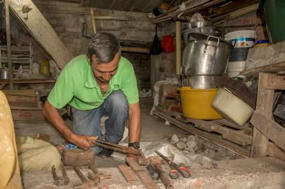
Making off
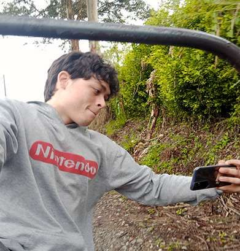
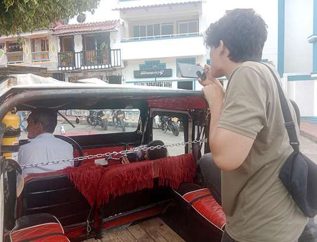
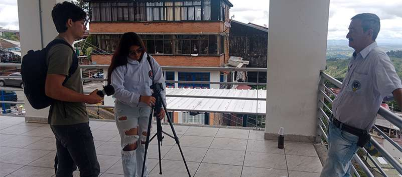
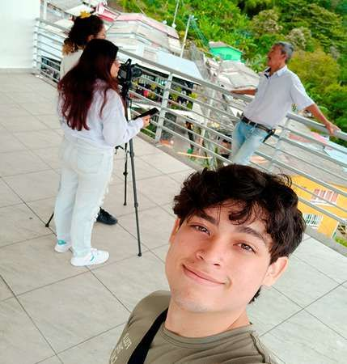
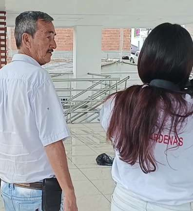
Fotogramas
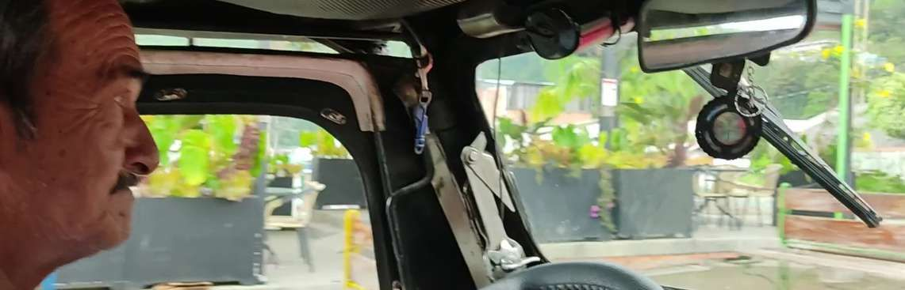
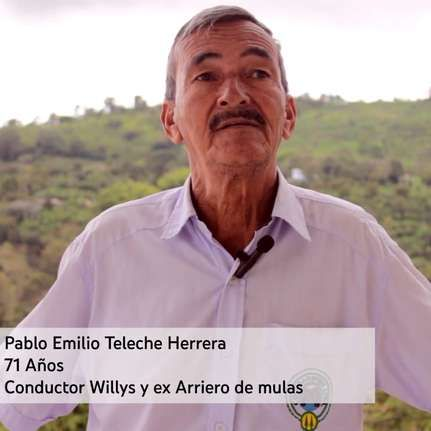
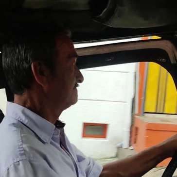
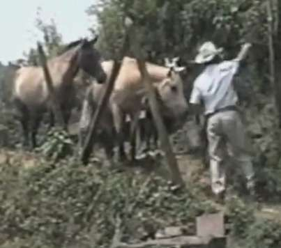
Equipo de producción
- Dirección
- Karen Fernanda Cárdenas Hernández
- Guion
- Michelle Nichole Palacio Hernández
- Producción audiovisual
- Miguel Angel Ramirez Garcia
Documental testimonial · Armenia, Quindío
05:00 PM
Memorias del terremoto de 1999
Sinopsis
05:00 PM reúne los testimonios de Yohana Andrea Hernández, María del Pilar Díaz y Jorge Hernán Arcila sobre las experiencias que vivieron durante el terremoto de Armenia de 1999. A través de sus recuerdos, el documental recupera distintas miradas sobre lo ocurrido y muestra cómo aquel acontecimiento permanece en la memoria de quienes lo atravesaron. Las entrevistas se entrelazan con imágenes de archivo, registros de prensa y escenas de las calles afectadas, construyendo un recorrido entre la experiencia personal y la memoria colectiva. La pieza invita a escuchar estas voces y a conservar sus historias como parte de la memoria de la región.
05:00 PM es un documental testimonial de Karen Cárdenas que reúne las experiencias de Yohana Andrea Hernández, María del Pilar Díaz y Jorge Hernán Arcila durante el terremoto de Armenia de 1999. Las entrevistas se acompañan de imágenes de archivo y registros de prensa para recuperar fragmentos de lo ocurrido desde la memoria de quienes lo vivieron.
Preproducción
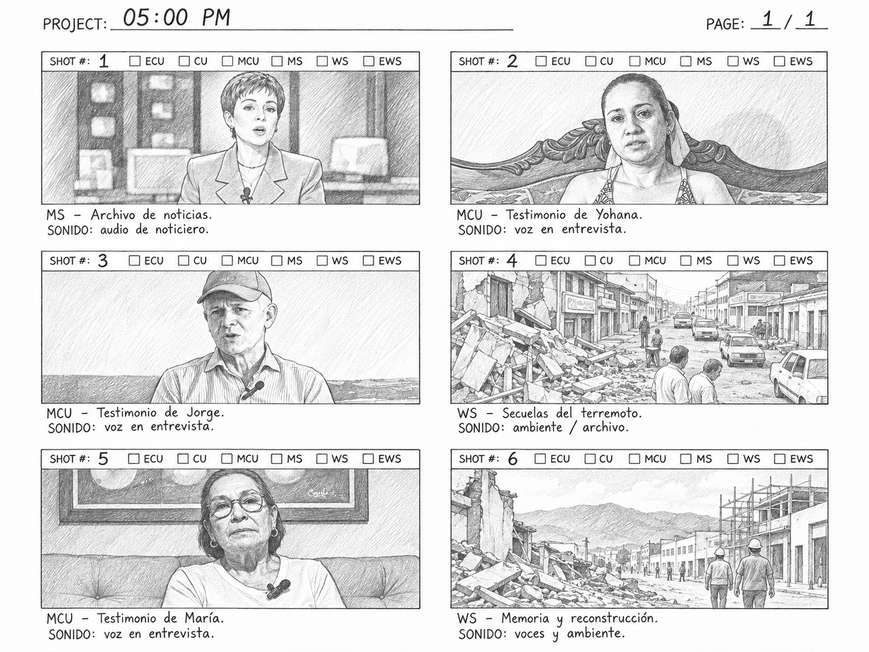
- MSArchivo de noticias.Sonido: Audio de noticiero.
- MCUTestimonio de Yohana.Sonido: Voz en entrevista.
- MCUTestimonio de Jorge.Sonido: Voz en entrevista.
- WSSecuelas del terremoto.Sonido: Ambiente / archivo.
- MCUTestimonio de María.Sonido: Voz en entrevista.
- WSMemoria y reconstrucción.Sonido: Voces y ambiente.
Moodboard
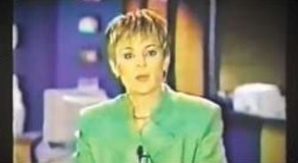
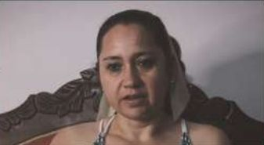
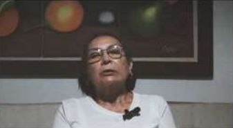
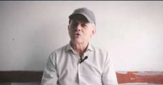
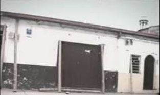
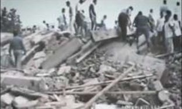
Voces del documental
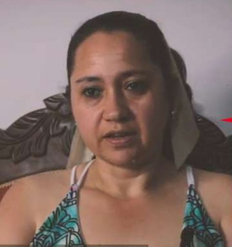
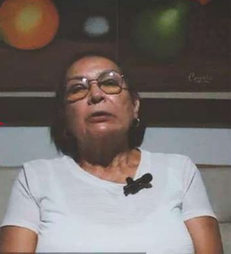
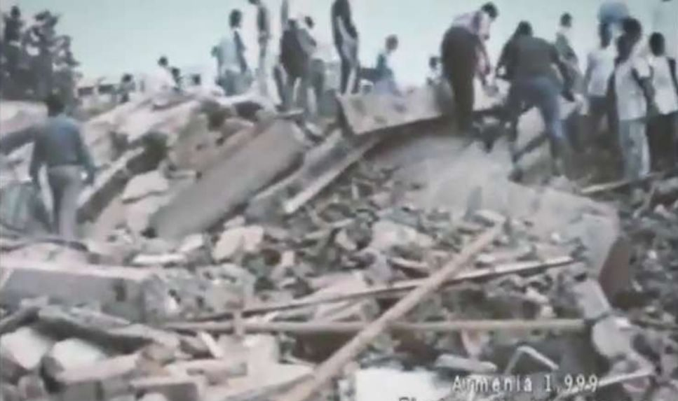
Equipo de producción
- Dirección de fotografía y producción
- Karen Fernanda Cárdenas Hernández
- Guion
- Michelle Nichole Palacio
- Entrevistados
- Yohana Andrea Hernández
- María del Pilar Díaz
- Jorge Hernán Arcila
Documental · Buenavista, Quindío
Relatos en la cordillera
Historias entre niebla y café
Sinopsis
Entre las montañas de Buenavista, Quindío, sobreviven historias que se resisten al olvido. Relatos de túneles ocultos, guacas, brujas y presencias inexplicables forman parte de la memoria oral de una comunidad que ha transmitido sus creencias, temores y experiencias de generación en generación.
El documental es un viaje íntimo por los mitos, leyendas y vivencias inexplicables que han marcado a generaciones de buenavisteños. A través de entrevistas con sus habitantes, el documental revela cómo estas historias han moldeado la identidad del pueblo. Una mirada profunda al imaginario colectivo de una comunidad que, entre realidad y fantasía, mantiene vivo el espíritu de sus raíces.
Preproducción
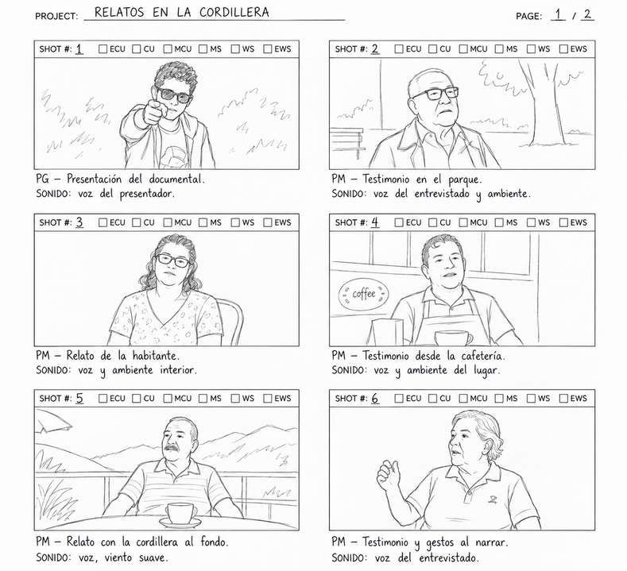
- PGPresentación del documental.Sonido: Voz del presentador.
- PMTestimonio en el parque.Sonido: Voz del entrevistado y ambiente.
- PMRelato de la habitante.Sonido: Voz y ambiente interior.
- PMTestimonio desde la cafetería.Sonido: Voz y ambiente del lugar.
- PMRelato con la cordillera al fondo.Sonido: Voz, viento suave.
- PMTestimonio y gestos al narrar.Sonido: Voz del entrevistado.
Moodboard
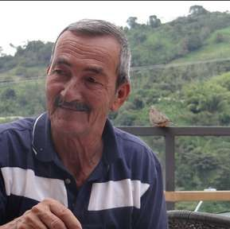
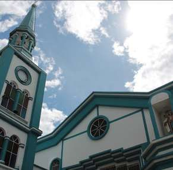
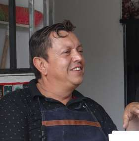
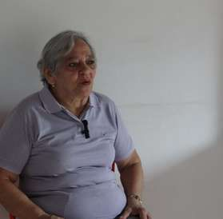
Making off
Fotogramas
Equipo de producción
- Dirección
- Karen Fernanda Cárdenas Hernández
- Guion
- Jaime Andrés Mesa Obando
- Producción audiovisual
- Samuel Zapata Cardona